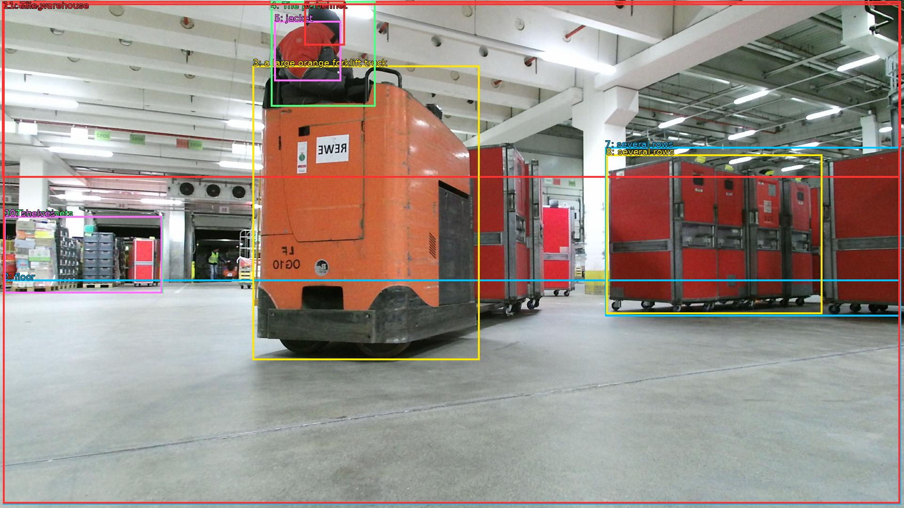

The image shows a large warehouse with a high ceiling and concrete floor. In the center of the image, there is a large orange forklift truck with a person sitting on top of it. The person is wearing a red jacket and a black helmet, and appears to be operating the forklift. To the right of the truck, there are several rows of red storage cabinets. The cabinets are arranged in a neat row, and there are shelves and racks in the background. The warehouse appears to have a modern and industrial feel to it.

Original · Caption raw · Grounding raw · Koordinate
Številke so lokalni ID regije. Dolge slikovne oznake so skrajšane; spodaj so celotne fraze. Napovedane regije se lahko prekrivajo ali opisujejo skupine.
| ID | Celotna fraza | bbox xyxy |
|---|---|---|
| 1 | ceiling | [4.799999713897705, 2.700000047683716, 1913.2799072265625, 377.46002197265625] |
| 2 | floor | [6.71999979019165, 594.5400390625, 1913.2799072265625, 1072.9801025390625] |
| 3 | a large orange forklift truck | [536.6400146484375, 139.86000061035156, 1018.5599975585938, 765.1800537109375] |
| 4 | The person | [575.0399780273438, 2.700000047683716, 797.760009765625, 226.260009765625] |
| 5 | jacket | [582.719970703125, 44.820003509521484, 724.7999877929688, 172.260009765625] |
| 6 | helmet | [646.0799560546875, 1.6200001239776611, 732.47998046875, 96.66000366210938] |
| 7 | several rows | [1285.43994140625, 312.6600036621094, 1913.2799072265625, 672.300048828125] |
| 8 | several rows | [1287.3599853515625, 328.8600158691406, 1746.239990234375, 667.9800415039062] |
| 9 | The cabinets | [8.639999389648438, 459.5400085449219, 346.55999755859375, 623.7000122070312] |
| 10 | shelves | [8.639999389648438, 459.5400085449219, 344.6399841308594, 623.7000122070312] |
| 11 | The warehouse | [6.71999979019165, 7.020000457763672, 1911.3599853515625, 1070.820068359375] |